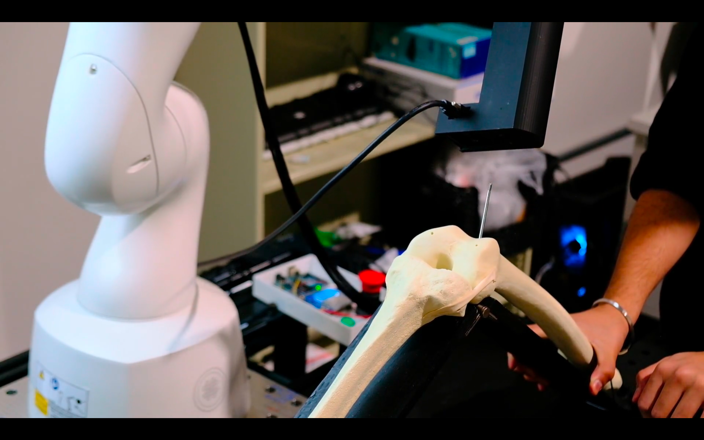
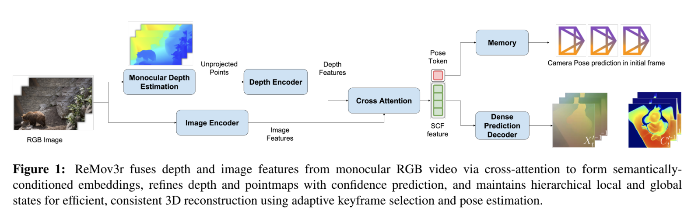
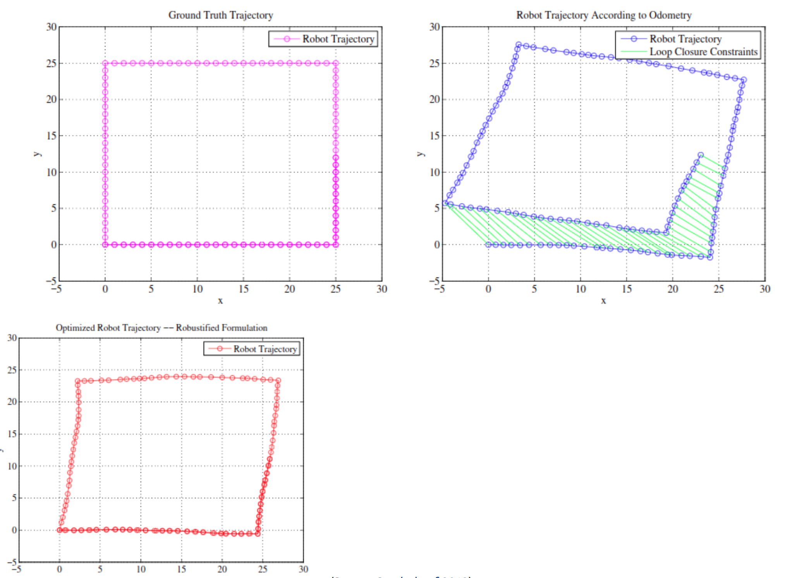

Sreeharsha Paruchuri
Hi, I'm Harsha, a robotics graduate student at Carnegie Mellon University's Robotics Institute, pursuing the Master of Science in Robotic Systems Development (MRSD). I'm currently working on giving robots the ability to understand complex 3D environments and take informed decisions for long-horizon tasks.
At IIIT-Hyderabad, I explored robotics and computer vision with Prof. Madhava Krishna and computational social science with Prof. Vinoo Alluri, learning to approach problems from multiple angles and design interdisciplinary solutions. Currently, I'm deepening that foundation through MRSD's unique blend of coursework, systems engineering, and entrepreneurship training which challenge me to think beyond code and about scalability, reliability, and teamwork in building complex robotic platforms.Previously, I worked as a Pre-Doctoral Research Fellow at TCS Research where I worked on imbuing embodied AI agents with multimodal sensing capabilities through audio and visual inputs.
My curiosity about how the world works trumps everything else - I love learning and thinking about new ways to solve pressing problems in society and humanity as a whole. I'm on the lookout for conversations and opportunities to hone and utilize my skills and would love to chat about ideas you may have :)
Research Interests: 3D Computer Vision and Long-Horizon Robot Intelligence for embodied agents.

Education |

|
Carnegie Mellon University, School of Computer Science
Aug 2024 - May 2026
CGPA: 4.11/4.0 Teaching: Introduction to Deep Learning (11-785) Coursework: Learning for 3D Vision, Generative AI, Deep RLLearning for 3D Vision, Generative Artificial Intelligence, Deep Reinforcement Learning and Control, Advanced Computer Vision, Manipulation, Estimation and Control |

|
International Institute of Information Technology, Hyderabad
Aug 2018 - July 2022
Major GCPA: 9.02/10 Awards: Deans Merit List, Undergraduate Research Award Coursework: Statistics in AI, Topics in Applied Optimization, Mobile RoboticsStatistical Methods in Artificial Intelligence, Topics in Applied Optimization, Mobile Robotics, Data Structures and Algorithms, Digital Image Processing, Game Theory, Compilers, Operating Systems, Linear Algebra |
Industry Experience |
|
|
Mach9
May 2025 - Aug 2025
Focus: Developed CUDA-accelerated 2D-3D feature correspondence pipeline and fine-tuned Vision-Language Models to speed up quality assurance in outdoor surveying systems
Key Contributions:
• Developed and deployed Pavement Symbol Extraction functionality to the Digital Surveyor software via CUDA-accelarated coordinate frame transformations and segmentation masks. • Fine-tuned a Vision-Language Model (VLM) to implement a secondary-inference pipeline to classify extracted open-set painted symbols according to user specifications. • Conducted 70+ controlled ablation experiments with A/B testing on Hungarian Assigner Costs, Loss weights, Model Queries, Multi-Scale Deformable Attention and encoder-decoder expressivity to boost the performance of the production model by 4%. • Utilised methods from Object-Detection literature to qualitatively capture a DETR-based polyline detection model's uncertainty to expedite downstream Quality Assurance and Quality Control processes, saving company and customer resources. |
|
|
Tata Consultancy Services Research
July 2022 - July 2024
Focus: Led research in embodied AI navigation focusing on audio-visual feature correspondence and reinforcement learning
Key Contributions:
• Audio-Visual Navigation: Led development of embodied AI agent with multimodal sensing, training online RL policy with novel class-agnostic reward, reducing path length by 21% • Offline RL for Indoor Robot Navigation: Built simulation pipeline to collect large-scale trajectory datasets, training a Causal Decision Transformer with early multimodal fusion; integrated environment randomization, behavior cloning baselines, and replay buffer curation to improve policy robustness and sample efficiency • CLIP-Enhanced Scene Graphs: Designed contrastive-learning framework to compute visual-language embeddings, leveraging GNNs to model object-region relationships • Open Vocabulary Manipulation (NeurIPS 23): Developed active SLAM exploration algorithm conditioned on probabilistic semantic map, improving task success by 60% • Volunteered for the Project Synergy initiative by TCS wherein volunteers taught written and spoken English to students in a Bangla-medium government school. |
|
|
Robotics Research Center (RRC, IIIT-H)
Jan 2020 - June 2022
Focus: Worked on dense 3D reconstruction and VSLAM related projects for indoor and outdoor autonomy
Key Contributions:
• Autonomous Sanitization Robot: Designed and implemented end-to-end robotic system during COVID-19 to autonomously sanitize indoor spaces, integrating computer vision, Visual-SLAM, and coverage-based navigation • Sim-to-Real Deployment: Built Gazebo simulation environments for iterative testing, then transferred stack to hardware platform with onboard sensors and sanitization actuators; finished runner-up among 140 teams • LiDAR SLAM: Evaluated LiDAR odometry and mapping approaches such as LOAM using CARLA simulation and outdoor driving data, analyzing localization accuracy and map consistency • Depth Estimation: Implemented stereo and monocular depth estimation methods on driving datasets including KITTI and NuScenes, developing a ROS package for multi-view bundle adjustment |
I have also been a part of
• Fused Laser, Camera, and Odometry data using Kalman filtering to boost online Multi-Object Tracking performance by 11% IoU on outdoor autonomous driving datasets
• Augmented difficult-to-obtain real-world LiDAR datasets using synthetic data from generative models and physics engines, improving 3D object detection networks for outdoor scenarios
• Applied statistical machine learning with Music Information Retrieval to analyze lyrical regularities as early indicators of mental illness; Published results at INTERSPEECH 2021
• Scraped Reddit data to link music-sharing trends with mental health during COVID-19 using BERT embeddings and DBSCAN clustering; Published in medical journal
Projects & Research |
|  |
Augmented-Reality and Robot Assisted Knee Surgery
Gathered and analyzed requirements from user studies, market competition, and sponsors to inform system development. Processed 3D and RGB information from the Apple Vision Pro to detect bone models in the environment via ICP registration.
Key Contributions:
• Project Leadership: Led a 5-person team as Project Manager, driving scheduling, sponsor communication, and system integration for an AR-assisted surgical robotics platform • Accuracy-driven Perception: Achieved sub-4 mm drilling accuracy in total knee arthroplasty using a KUKA MED7 arm with multi-stage pointcloud registration (SAM2 + ICP) • AR Integration: Integrated Apple Vision Pro for dynamic bone tracking and real-time surgeon-in-the-loop planning across long surgical horizons • Motion Planning: Designed and deployed a ROS + MoveIt planning subsystem that adaptively updates as surgical pins are drilled, enabling safe trajectory generation • Hardware Development: Built a custom 3D-printed drill end-effector with embedded control electronics, activated via trajectory execution for autonomous drilling |
|  |
3D Foundation-Models for Monocular Video Reconstruction
Implemented semantic-geometric feature fusion using cross-attention between foundation model embeddings (DINOv2, Depth Anything) in a hierarchical state representation to recover camera extrinsics. Devised an adaptive keyframe selection strategy for confidence-aware pointmap refinement using a DUST3R-style architecture.
Key Contributions:
• Foundation Model Fusion: Designed cross-attention mechanism to combine DINOv2 semantic features with Depth Anything geometric priors, achieving robust 3D scene understanding from monocular video • Adaptive Keyframe Selection: Developed confidence-aware algorithm that dynamically selects optimal frames for reconstruction, improving pointmap quality by 30% over uniform sampling • DUST3R Architecture: Implemented hierarchical state representation with multi-scale feature pyramids to handle camera motion estimation and dense 3D reconstruction simultaneously |

|
CMU VLA Challenge
Built a Vision-Language Navigation (VLN) system that answered natural language queries by combining Gemini 2.5 Pro embodied reasoning with a custom ROS state machine. The system produced numerical answers, object references, or waypoint plans under a strict 10-minute limit.
Key Challenges & Solutions:
• **Ambiguous spatial queries** (“closest to the window”): used Gemini 2.5 Pro to classify and reason over spatial relations• **Strict 10-minute runtime**: designed a ROS state machine to coordinate exploration, mapping, and answering with timed transitions • **Constraint-aware navigation**: developed waypoint planners that leveraged semantic object information to satisfy “between/avoid” instructions |
|  |
Pose Graph Optimization for 2D SLAM
Implemented a 2D SLAM backend where noisy odometry and loop closure constraints were refined into a globally consistent trajectory. Used jax to compute residuals and Jacobians, applied nonlinear least-squares optimization, and validated improvements with RPY and APE error metrics. Explored the role of confidence weighting in the information matrix and compared against g2o optimization with robust kernels.
Key Contributions:
• Iterative Optimization: Built custom nonlinear solver in JAX with residual and Jacobian computation for pose updates • Information Matrix Analysis: Studied effect of varying odometry vs loop closure confidence weights on trajectory quality • Error Evaluation: Quantified improvements via RPY drift and Absolute Pose Error reduction compared to initial odometry • g2o Benchmarking: Ran Cauchy, PseudoHuber, and Huber kernels in g2o_viewer to compare optimization strategies• Literature Review: Analyzed “Past, Present & Future of SLAM” survey, contextualizing open problems in robustness and scalability with deep learning-based approaches |

|
Music, Mental Health, and Representation Learning
Applied BERT-based sentiment analysis and k-means clustering to uncover nuanced links between language and acoustic music features in data scraped from mental health related subreddits during COVID-19. This research contributed to understanding the relationship between music and mental health through computational methods.
Key Contributions:
• BERT Sentiment Analysis: Fine-tuned transformer models on mental health discourse to extract emotional patterns from 50k+ Reddit posts, achieving 87% accuracy in mood classification • Music Information Retrieval: Developed acoustic feature extraction pipeline using librosa and essentia to correlate musical elements (tempo, key, valence) with psychological states • COVID-19 Impact Study: Applied k-means clustering and statistical analysis to identify significant behavioral shifts in music consumption patterns during pandemic, published findings at INTERSPEECH 2021 |
Teaching Experience |
|
|
Carnegie Mellon University
Course Website Description: Comprehensive graduate-level course covering neural networks, CNNs, RNNs, transformers, and modern deep learning architectures.
Key Contributions:
• Created educational content including slides and tutorials for NumPy fundamentals and Loss functions (Focal Loss, Chamfer Loss, RLHF) • Collaborated with instructional team to revise and update homework assignments for RNNs, GRUs, Transformers, Language Generation, and Diffusion models • Conducted over 40 hours of office hours, labs, and hackathon events, providing hands-on instruction and problem-solving support for undergraduate and graduate students |
|
|
International Institute of Information Technology, Hyderabad
Courses: Mobile Robotics, Music Mind and Technology, Introduction to Coding Theory, RRC Summer School
Course Details:
• CS7.503.M21: Mobile Robotics: The most renowned course of IIIT-H across international universities. Provides students with a comprehensive toolkit for research at the intersection of Robotics and Computer Vision, covering SLAM algorithms and classical Computer Vision techniques • CS9.434.S22: Music, Mind and Technology: An interdisciplinary course using algorithms and mathematics to explore how music is perceived by individuals and groups. Served as head TA, designing evaluations for over 60 graduate and undergraduate students • EC5.205.S21: Introduction to Coding Theory: A fascinating subject building on Shannon's Theory of Communication, exploring the mathematical foundations that underpin everyday communication systems • RRC Summer School: Taught students the fundamentals of classical Computer Vision and introduced modern AI-based methods utilizing convolutional neural networks during this intensive summer program |
News |
Technical Skills |
|
Languages: Python, C++, MATLAB, CUDA, Java, Go, Swift
ML/AI: PyTorch, TensorFlow, Scikit-learn, PyTorch3D
Tools: ROS2, Unity 3D, OpenCV, XCode, Django
Miscellaneous: Rust, JAX |
|
Original Template taken from here! |